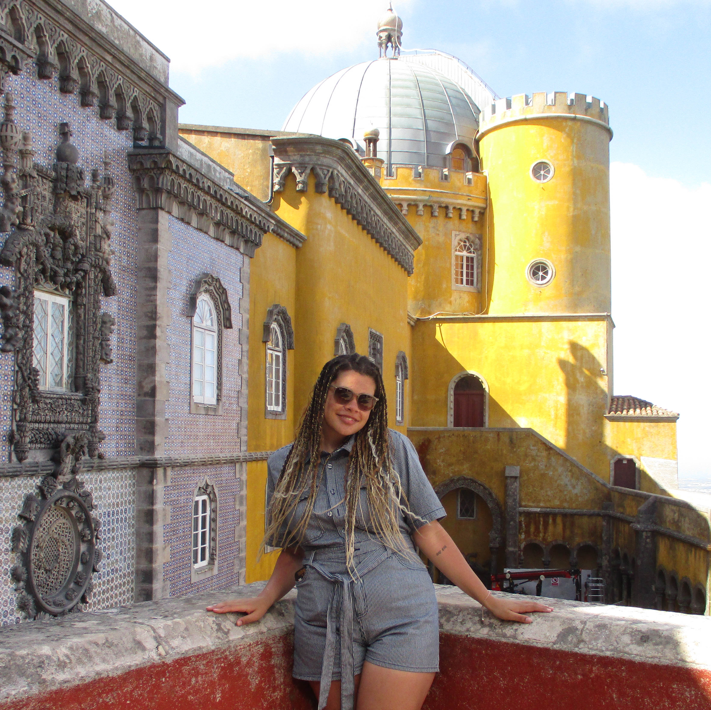
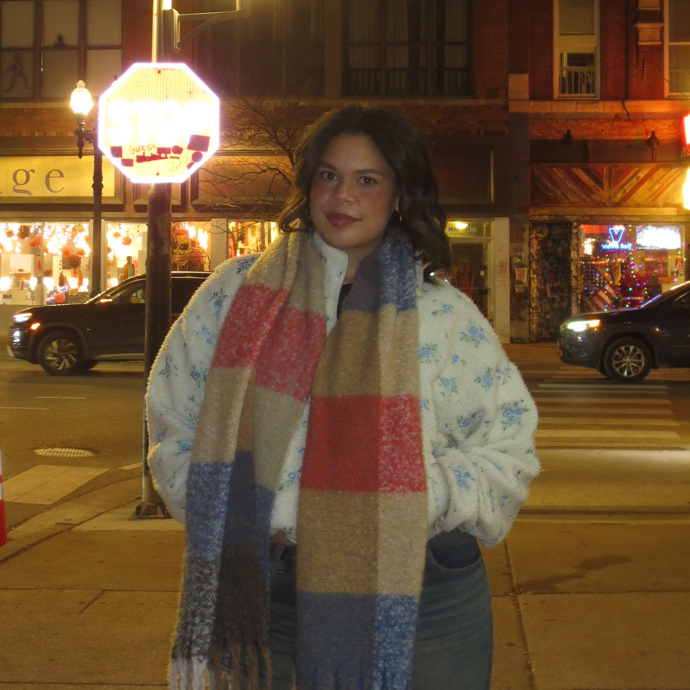
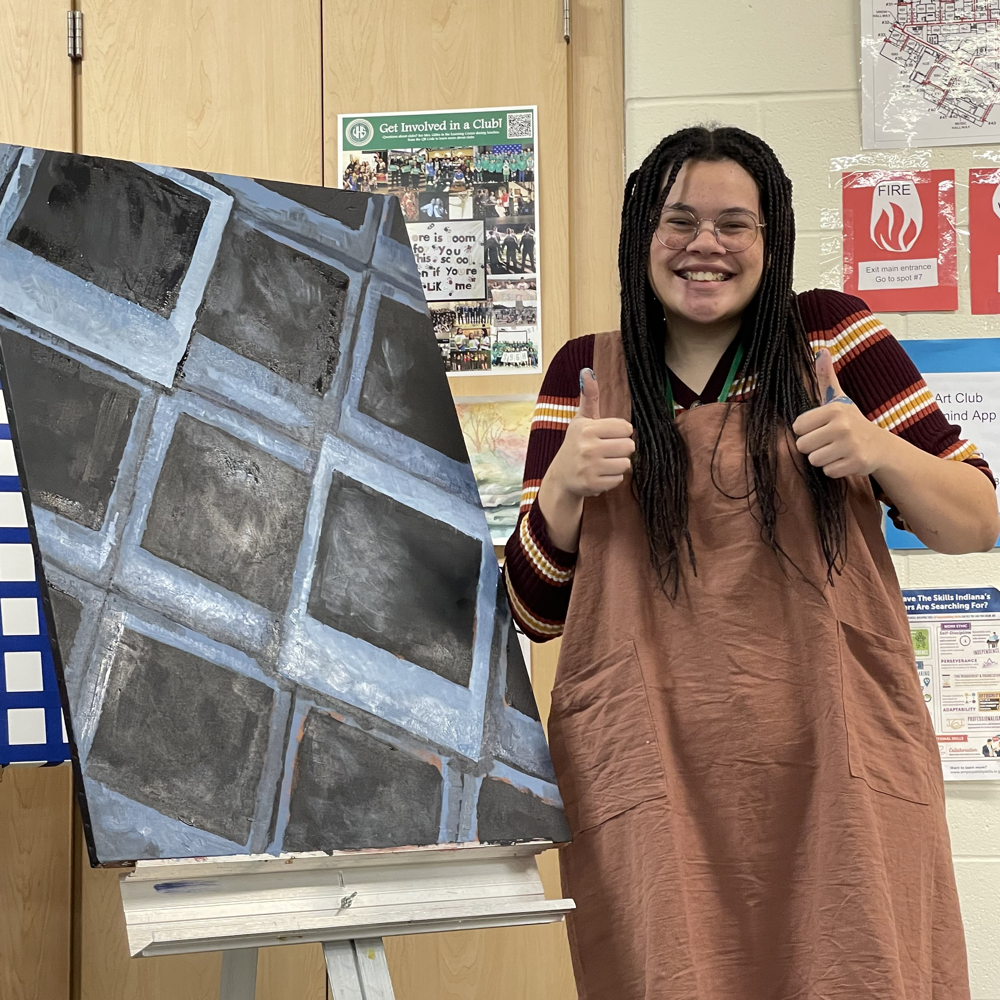

A little bit more about me...
A designer who never really stopped doodling, just started doing it with intention.

I’m a designer who learns best by going places, noticing details, and asking why things work.
I’m constantly inspired by the world around me, sometimes that means studying interfaces, and sometimes it means being 5 hours ahead studying abroad in Portugal (pictured here).


Travel and exploration shape how I approach design. Observing new environments, cultures, and visual systems pushes me to think more intentionally about usability, accessibility, and storytelling. I’m always studying other artists and designers, then translating what I learn directly into my UI/UX and graphic design work.
Traditional art is the foundation of how I design digitally.
My background in traditional art plays a huge role in how I design digitally. Painting and drawing trained me to think about composition, hierarchy, and balance before I ever opened Figma.

Whether I’m designing digitally or working hands-on, I approach every project with curiosity, intention, and a strong eye for detail.
I care deeply about how people experience design, and I’m always looking for ways to make that experience more thoughtful, engaging, and human.